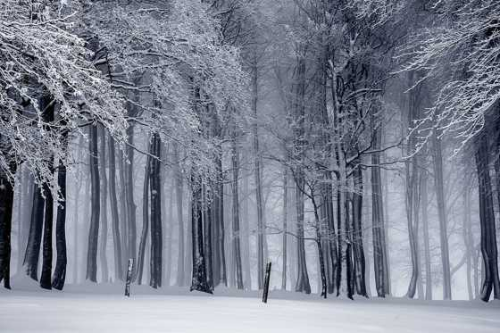
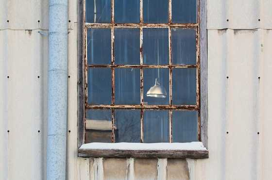
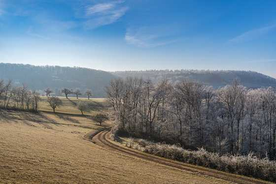
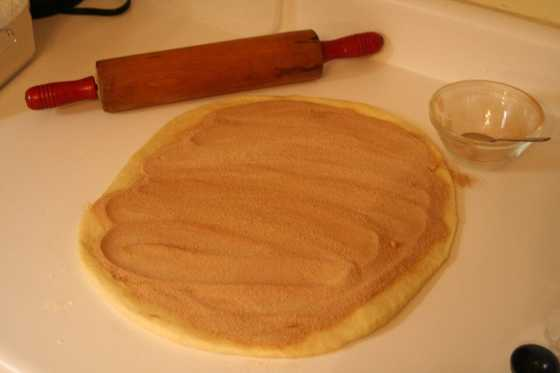
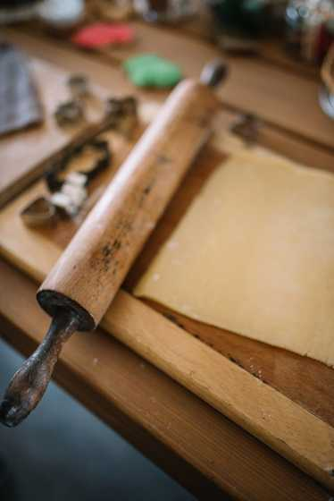
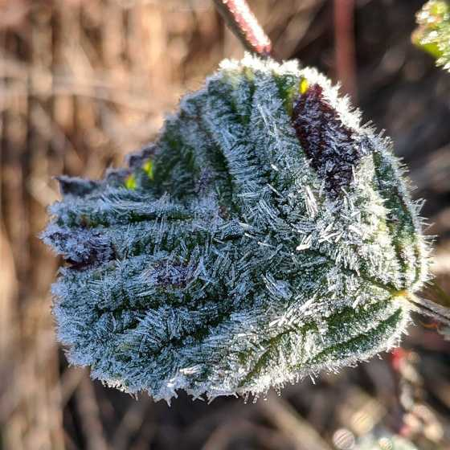

DAIDOKORO MICCHI台所 micchi
丘の上の台所で、雪原を眺めながら、地元の野菜をひとさらに。ふだんから少し離れる時間を。
お店のこと
親戚の民宿を、台所のあるカフェに。
オーナーは妙高高原出身。大学進学で地元を離れ、飲食店で経験を積んだのち、あらためて故郷の景色を見て、杉野沢でお店を開くことにしたそうです。
建物は親戚の民宿。和室の低い天井を上げて開放感を出し、古い柱や建具は残して、窓から雪原を眺められるつくりに改装されました。2024年12月にオープンしています。
「この場所で非日常を感じてもらえたり、こんな場所があるんだと知ってもらえるような場所にしたい」。地元の方にも旅の方にも、いつもと違う時間を過ごしてほしいという想いが、取材記事で紹介されています。
上記は上越タイムス・雪国タウンなどの報道に基づく内容です(出典は制作メモに記録)。店名「micchi」の意味は確認できていません。





メニュー
野菜が主役のワンプレートと、甘いもの。
価格・内容は時期により変わります。営業時間・定休日・価格: 準備中 / 電話: 準備中(最新情報はInstagramで)







口コミ
こんな声が届きそうです イメージ例
以下は制作側が作成したイメージ例で、実際のお客様の声ではありません。
窓の外の雪を見ながらいただくランチは、野菜がたっぷりでほっとしました。
木の柱が残る和室の雰囲気が落ち着きます。食後のケーキとコーヒーもゆっくり楽しめました。
スキーの帰りに立ち寄りました。旅の途中なのに、台所に招かれたような気分でした。